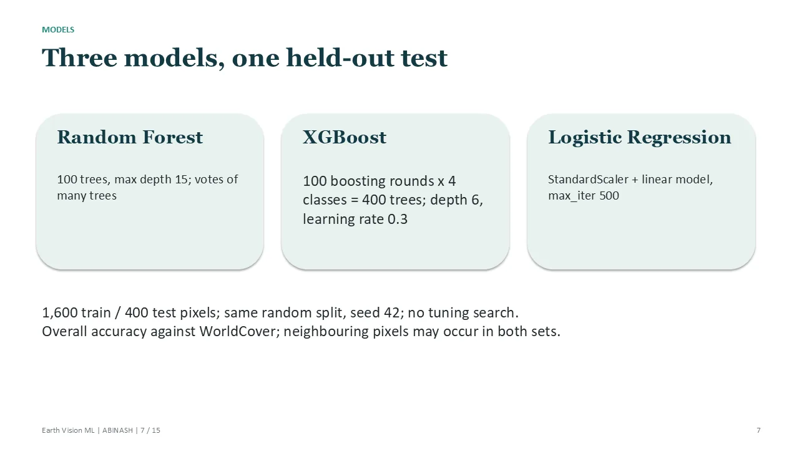

Case study / 06Pune, India · 2026
Team project · Spatial Modelling · Symbiosis Institute of Geoinformatics
Earth
Vision ML.
Satellite imagery, machine learning and an interactive map: choose a view and a model, and get built-up, vegetation, water and barren layers without downloading the archive. A team project with Abinash and Piyush.
See the results
01 / Situation
From pixels
to a map layer.
Land-cover mapping supports planning, monitoring and water management, but manual interpretation is slow. The goal was one interactive request that goes from Earth Engine imagery to coloured class layers, and to compare non-linear models against a linear baseline on the same data.
water · barren
+ 3 indices
FastAPI · React
02 / Approach
Labels, features,
models, map.
- 01
Frame the labels
ESA WorldCover v200 (2021) is collapsed into four classes; other categories are masked out. 2,000 pixels were sampled at 30 m over a ~350 km² Pune tile. In the team presentation I covered the problem framing, study region, label mapping and workflow.
- 02
Build the features
A harmonised Sentinel-2 L2A median composite from scenes under 10% cloud gives bands B2, B3, B4, B8 and B11, plus NDVI, NDWI and NDBI, so each pixel carries eight values.
- 03
Train and compare
Random Forest (100 trees, depth 15), XGBoost (100 rounds, depth 6) and a scaled logistic regression, all fitted on the same 1,600 training pixels and scored on the same 400.
- 04
Serve it
A React + Vite + Leaflet client posts the map extent and model to a FastAPI endpoint. The service pulls thumbnails from Earth Engine, classifies every pixel with a saved model and returns four transparent overlays and class shares.
03 / Results
Trees beat
the baseline.
95.8%
XGBoost agreement with WorldCover on 400 held-out pixels (≈95% interval 93.8–97.8)
94.2%
Random Forest: within error of XGBoost, so the ranking between the two is unresolved
83.1%
logistic regression baseline: the tree ensembles gain over 11 points
113 ms
XGBoost classifying a 65,536-pixel scene, median of three runs (excludes Earth Engine time)
NDWI dominates XGBoost. The gain-based importance puts NDWI at 0.51, far above any other feature, while Random Forest spreads its reliance across bands. These are within-model scores, not causal effects.

04 / Data & method
Proxy labels,
stated as proxies.
Accuracy here means agreement with ESA WorldCover, not independent field verification, and the team’s report and presentation say so on every results slide.
- Imagery
- Sentinel-2 L2A via Google Earth Engine
- Labels
- ESA WorldCover v200 (2021)
- Models
- scikit-learn · XGBoost
- Service
- FastAPI · joblib models
- Client
- React · Vite · Leaflet
05 / Limits & honesty
What it does
not claim.
From the team’s own limitations slide:
- Evaluation uses proxy labels from one Pune tile, a random split and only 400 test pixels; neighbouring pixels can fall in both sets.
- No confusion matrix or per-class scores were reported, so overall accuracy can hide weakness on a rarer class.
- Training uses floating-point reflectance, while inference reconstructs reflectance from 8-bit thumbnails; that shift has not been measured.
- The long-window median composite is compared with a 2021 label map, and the statistics card omits the barren share.